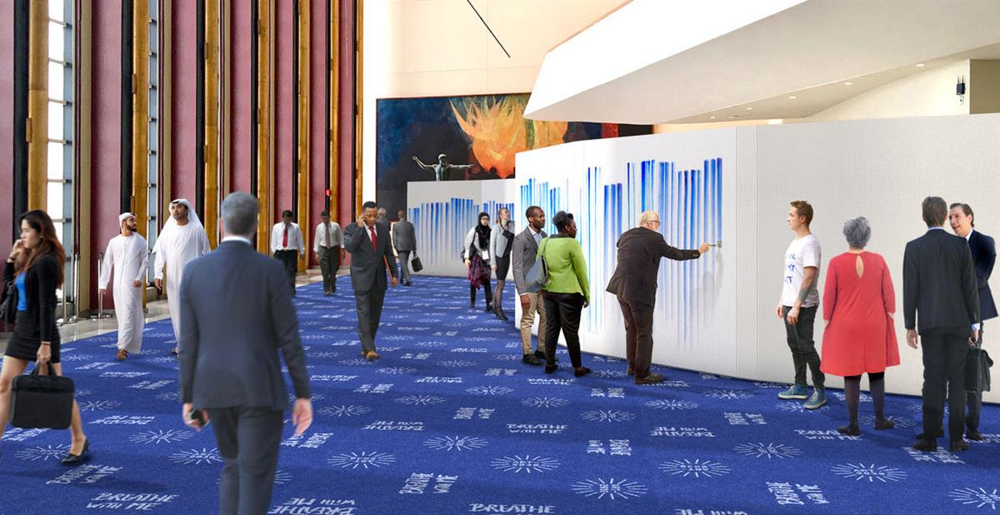
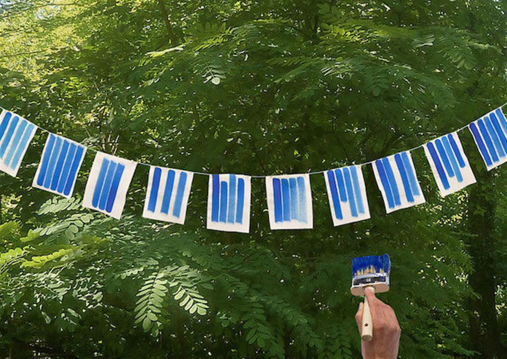

Image: Visualization of Breathe with Me in Central Park, New York City. Visualization by Studio Jeppe Hein. Courtesy: Jeppe Hein and ART 2030
Image: Visualization of Breathe with Me in Central Park, New York City. Visualization by Studio Jeppe Hein. Courtesy: Jeppe Hein and ART 2030
Breathe with Me - Jeppe Hein
September 21-27, 2019New York City
Life begins with an inhale and ends with an exhale. In-between we all breathe and live different lives. And yet, each breath keeps us together, connected, sharing the same air. - Jeppe Hein
This September, ART 2030 is delighted to launch Breathe with Me, a global art project by Jeppe Hein and ART 2030, to bring the entire world together with one simple, universal action: breathing.
The public art installation Breathe with Me invites audiences to create a piece of art together, by painting their breath in the form of two blue lines, painted as they exhale in long downward brush strokes. While everyone paints the lines of their breath differently, together the lines form part of a universal whole. While reflecting on the potential of collaborative and community action, the project also raises awareness that the air we breathe is part of our connected world and climate.
This September 21-27, Breathe with Me will launch inside the United Nations Headquarters and in Central Park, as part of ART 2030 New York during the 74th session of the United Nations General Assembly and coinciding with the UN Climate Action Summit. At the same time, Breathe with Me educational, digital and community activations, will also take place across the city and the world.
Please join us in Central Park September 25-17.

Education and Community

As an invitation to the entire world to breathe together, Breathe with Me also includes an Educational and Community Workshop tool-kit that is available for download and use by anyone, anywhere.
Find out more about the tool-kit here, and share your community's version of Breathe with Me by tagging your social posts with #BreatheWithMe!
SOURCE: ART 2030